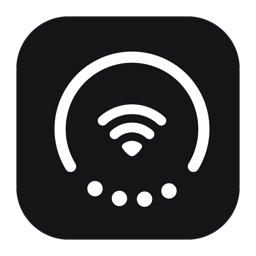
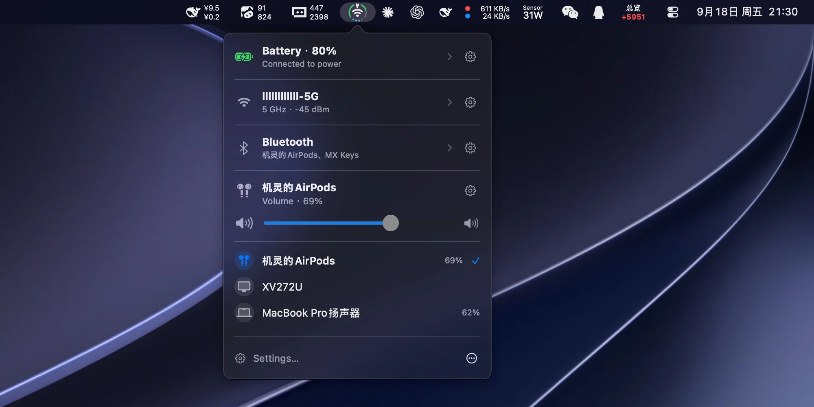

Status Trio
Three system stats in one ring. Native macOS menu bar and Dock icon.
Wi-Fi, battery, and volume unified into one glanceable, configurable status ring. Open source by lingyired, contribution by Reff.
Download for Mac
Free · macOS 15 or later · Open source by lingyired & Reff

Three signals in one
Combines battery, Wi-Fi, and volume in a single compact icon with live status and popover details.
Menu bar or Dock
Choose where it lives: menu bar, Dock, or both. Adapts smoothly to light, dark, and wallpaper tints.
Lightweight & private
Pure Swift, event-driven updates with near-zero CPU and memory usage. Nothing ever leaves your Mac.
Requires macOS 15 or later.